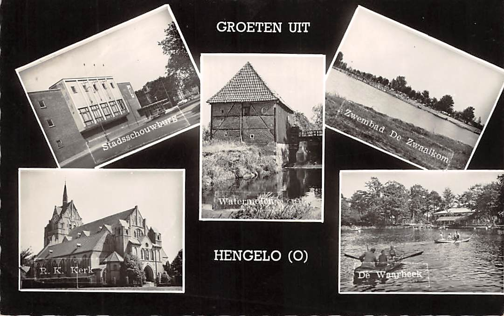

Hengelo
Feitjes
- De gemeente Hengelo pas ontstaan in 1811.
- De gemeente begon pas te groeien tijdens de Industriële revolutie
- De nadruk kwam steeds meer te liggen op de technische industrie.
- In de Tweede Wereldoorlog werd Hengelo geregeld gebombardeerd.
- Het centrum werd op 6 en 7 oktober 1944 zo goed als geheel vernietigd.
Museum Hengelo

Inwoners van de stad, en natuurlijk ook andere belangstellenden, moeten kennis kunnen nemen van de lokale geschiedenis. Dat doen we door hen het ‘verhaal van de stad Hengelo’ te vertellen in een modern-museale omgeving, ondersteund door kunst- en gebruiksvoorwerpen, documenten en beeldmateriaal.
In het museum bevinden zich onder andere Keuken uit 1930, Erkerkamer, Stijlkamer, Ripperdakamer, Dienstbodekamer, Oorlogskabinet en Popkamer jaren ‘60.
Museum Hengelo verklaart op aantrekkelijke en heldere wijze waarom Hengelo eruit ziet zoals ze eruit ziet, hoe de stad zich ontwikkeld heeft in de afgelopen eeuwen en wat daarbij verloren is gegaan en gespaard is gebleven. Maar meer nog dan het verhaal van de stad te vertellen, vertelt het museum verhalen van mensen.
Museum Hengelo
Beekstraat 517551 DP Hengelo
Tel. 074 – 259 42 16
E-mail:info@museumhengelo.nl
Wandelroute Tuindorp Hengelo
De Tuindorproute brengt je in een prachtig stukje Hengelo; de wijk Tuindorp ’t Lansink. Als één van de eerste fabrikanten in Nederland vond Charles Theodorus (C.T) Stork dat zijn verantwoordelijkheid verder ging dan alleen ondernemen. Al in 1867 stichtte hij de ‘Hengelosche Bouwvereniging’ en gaf hiermee de aanzet tot het denken over goede arbeiderswoningen. Het waren zijn zoons, en met name Coenrad Frederik Stork (C.F.), die het plan in 1910 ten uitvoer brachten.
De inspiratie voor het tuindorp ontleenden de gebroeders Stork aan voorbeelden in Engeland. Het moest een wijk worden met verschillende woningtypen, grote tuinen en openbare parkjes. Door variatie van duurdere en goedkopere woningen kon de wijk een afspiegeling van de fabrieksbevolking worden. Arbeiders, bazen, ingenieurs en klerken, tezamen de Storkfamilie vormend, zouden kriskras door elkaar wonen. Het kapitaal voor de wijk werd bijeengebracht door de firma’s Stork, Dikkers & Co en de Nederlandse Katoen Spinnerij.
Karel Muller
De Amsterdamse architect Karel Muller maakte het ontwerp voor het tuindorp. Na de aankoop van de grond waarop boerderij ‘Het Lansink’ gelegen was, kon vrijwel aansluitend aan de fabrieksterreinen van Stork en Dikkers met de bouw worden begonnen. De opzet van het tuindorp voorzag in alle voor een dergelijke wijk noodzakelijke voorzieningen. Sinds 2003 is Tuindorp ’t Lansink een beschermd stads- en dorpsgezicht.Start adres:
Tuindorp 't LansinkC.T. Storkstraat
7553 AP Hengelo